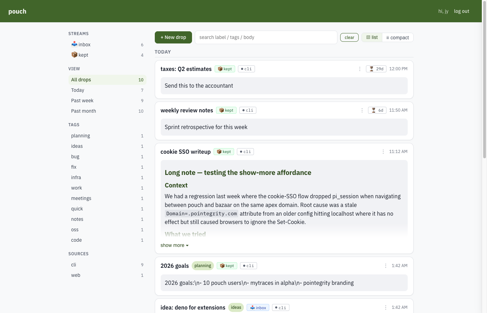
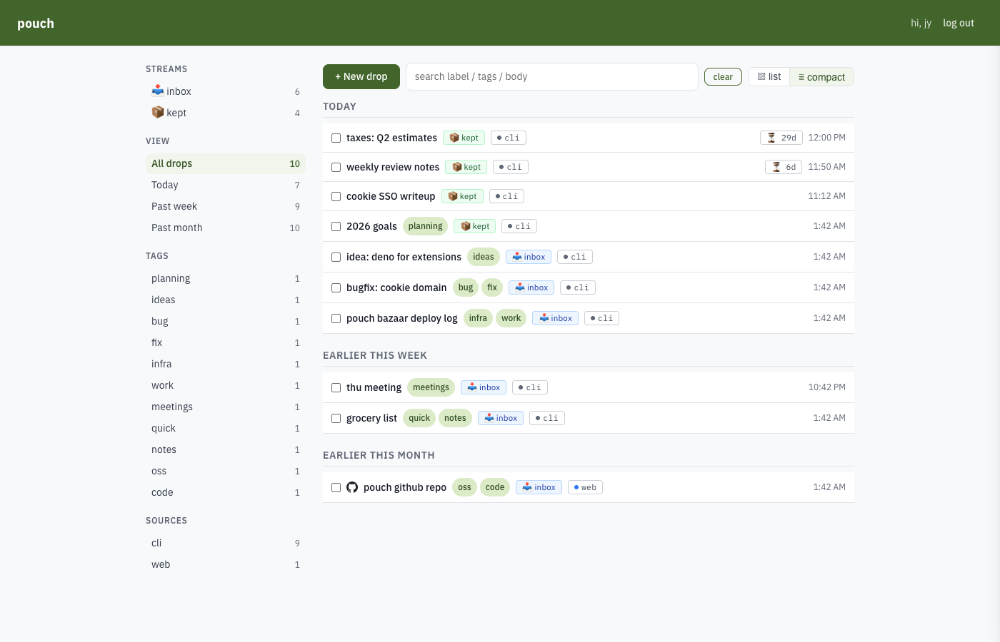
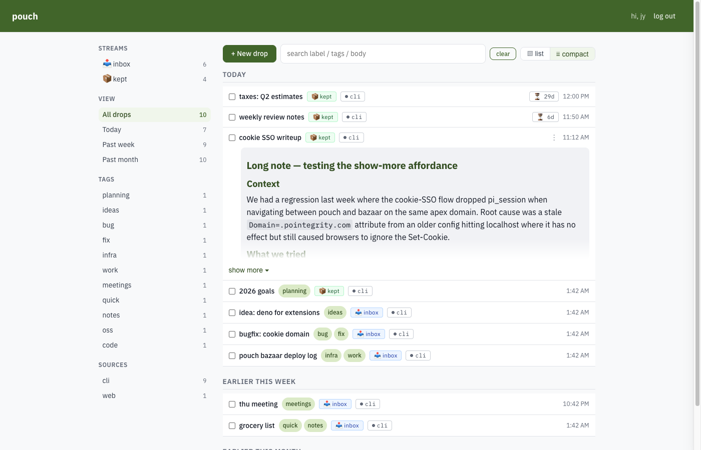
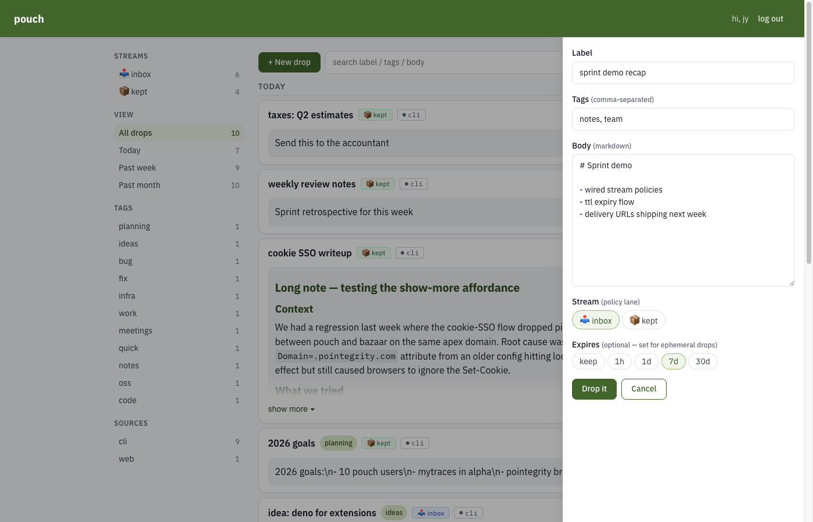
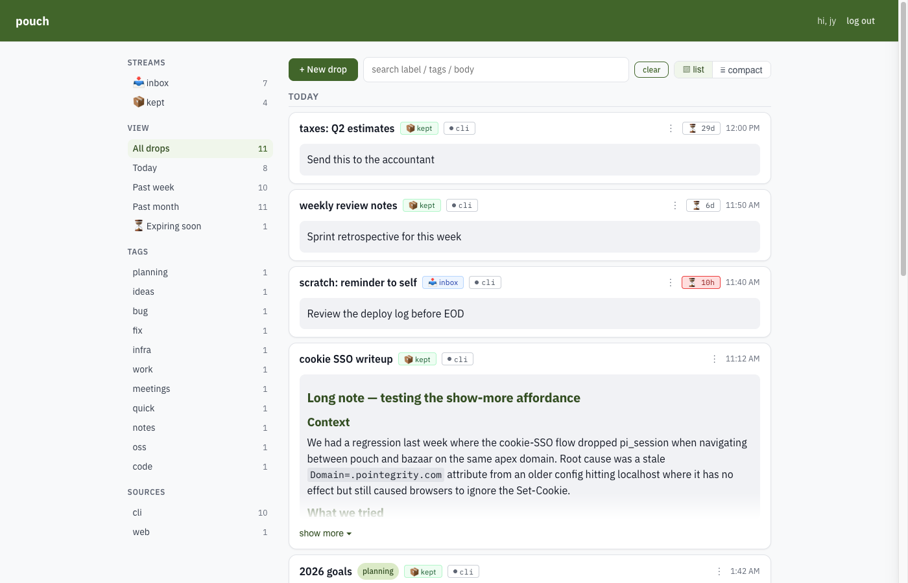
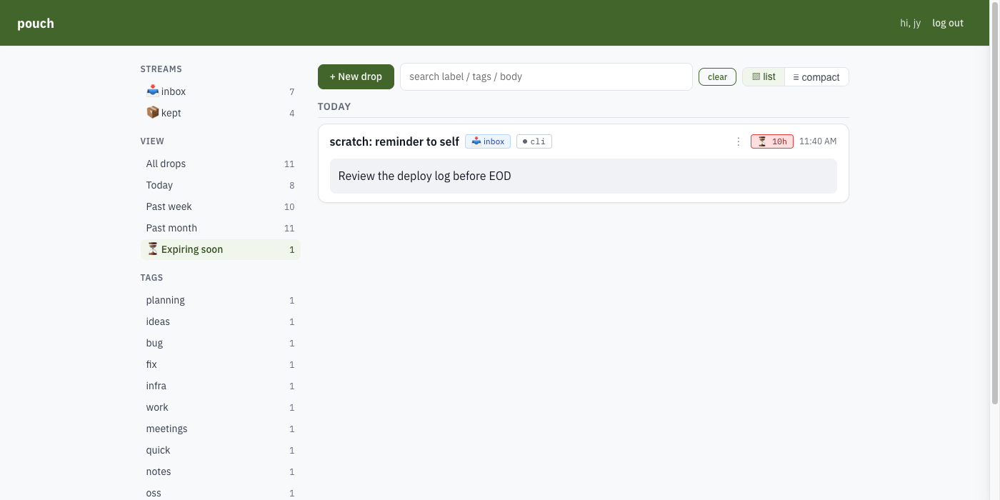
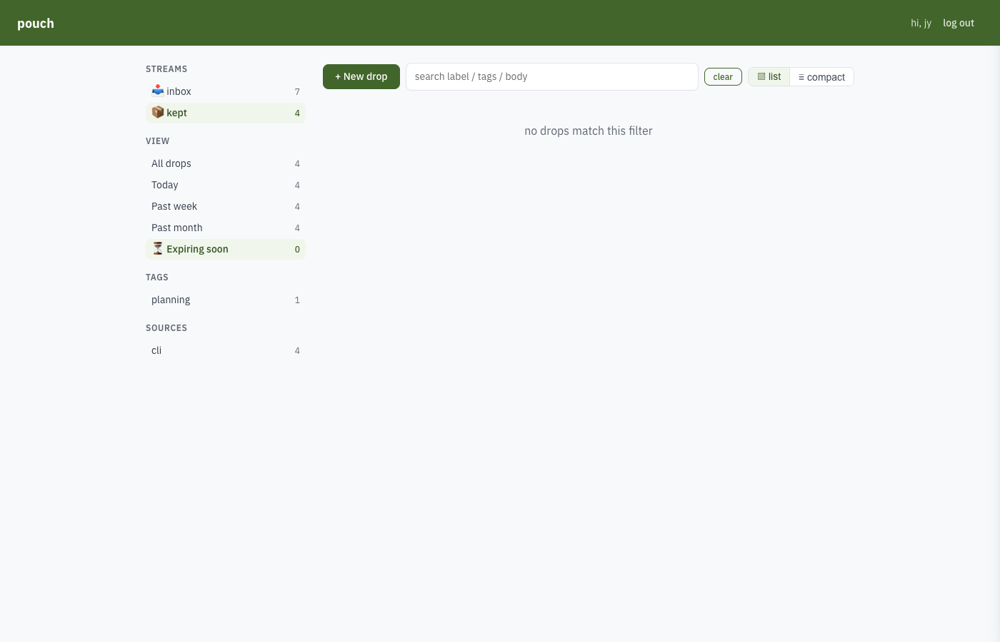
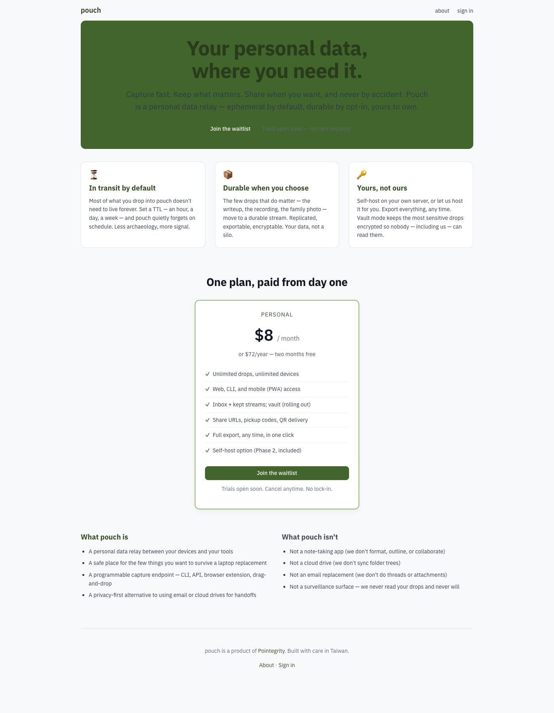

Pouch is the Pointegrity flagship: a subscription app that lets individuals capture, organize, and retrieve their personal data across devices. Ephemeral by default, durable by opt-in, yours to own.
The screenshots below are from a working build. Commercial launch is on approval of payment processing; pricing is $8/month or $72/year (single tier) with a 14-day trial.
The primary workspace. Sidebar groups drops by stream (inbox vs kept), date, tag, and source. Each drop shows its title, tags, stream, origin, and creation time. Long drops collapse to a preview with a "show more" affordance.

One-line rows with a checkbox for bulk action. Good for scanning large collections or selecting multiples to archive or move.

Body renders inline. Long content is capped with a soft fade and a "show more" button — no modal, no route change.

A slide-in form on the right. Required: label + body. Optional: tags, stream (inbox ephemeral vs kept durable), and a time-to-live preset (1h / 1d / 7d / 30d / keep forever). Drag-and-drop onto the page pre-fills the form from the dropped content.

Every drop can expire on a schedule you set. Cards show a ⏳ badge with the remaining lifetime (red when under 24 h, amber when ≤ 3 days). Pouch quietly sweeps expired drops on a cron; nothing sits forever unless you explicitly promote it to the kept stream.

Sidebar auto-populates an Expiring soon filter showing only drops within 3 days of expiry — so nothing important lapses quietly.

Drops you promote to kept don't expire. Separate stream lane so archival items aren't cluttered by transient captures.

Pouch ships a first-class CLI. The same streams, tags, and TTL
options available in the web UI are also available via
pouch put, pouch ls, pouch mv.
$ echo 'demo recap' | pouch put --stdin --label 'sprint demo' --tag notes,team --stream kept itm-a9f31c8b02 $ pouch ls --stream kept itm-a9f31c8b02 2026-04-23 22:15 kept notes,team sprint demo itm-long-show… 2026-04-23 11:12 kept notes,auth cookie SSO writeup itm-6b3663e52… 2026-04-22 01:42 kept planning 2026 goals $ pouch status server: https://pouch.pointegrity.com auth: jy (admin) expires in 29 days sub: trial (13 days left)
Public pricing page. No free tier; 14-day trial, no credit card required to start. Full Terms of Service and Privacy Policy published at /legal/terms and /legal/privacy.
